Chapter 9: Peptide Oxidation/Reduction Side Reactions
（多肽氧化/还原副反应）
半胱氨酸（Cys）是多肽合成中最容易发生氧化副反应的氨基酸之一。其侧链巯基（-SH）可被逐步氧化为多种氧化态：
• Cys-SH（巯基）→ Cys-SOH（次磺酸，sulfenic acid）→ Cys-SO₂H（亚磺酸，sulfinic acid）→ Cys-SO₃H（磺酸，sulfonic acid）
• Cys-SH → Cys-S-S-Cys（二硫键，disulfide）
这些氧化态之间的转化构成了Cys氧化副反应的核心。其中，次磺酸（Cys-SOH）是最关键的中间体。
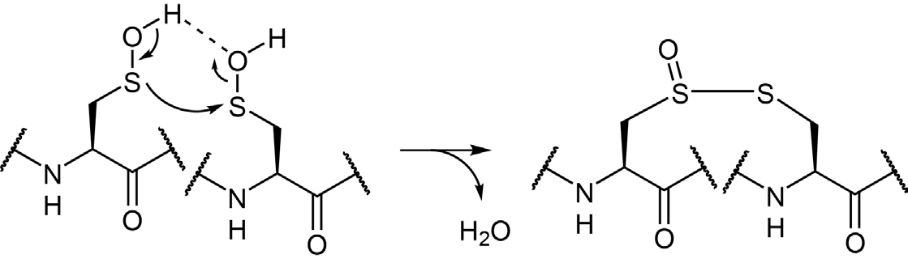
Figure 9.1 Cys氧化态的逐步转化
Cys-SOH具有双重反应性：
（1）作为亲电试剂：可被另一个Cys-SH进攻形成二硫键；也可与酰胺骨架反应形成sulfenyl amide（次磺酰胺）
（2）作为亲核试剂：可与另一分子Cys-SOH反应形成硫代亚磺酸酯（thiosulfinate）；可与NBD-Cl、烯烃、炔烃反应；可被PPh₃还原为Cys-SH
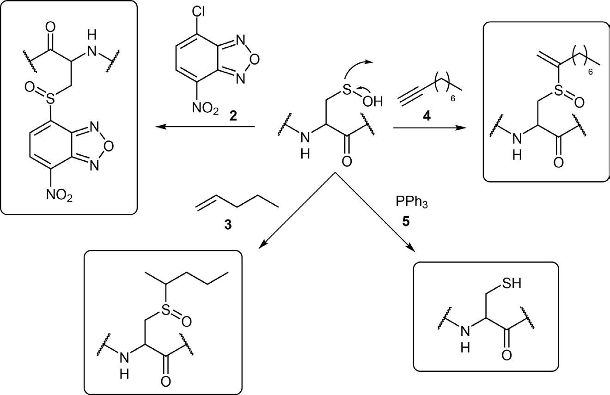
Figure 9.3 两分子Cys次磺酸形成硫代亚磺酸酯
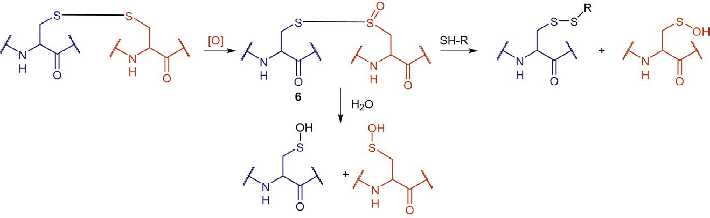
Figure 9.4 次磺酰胺的形成
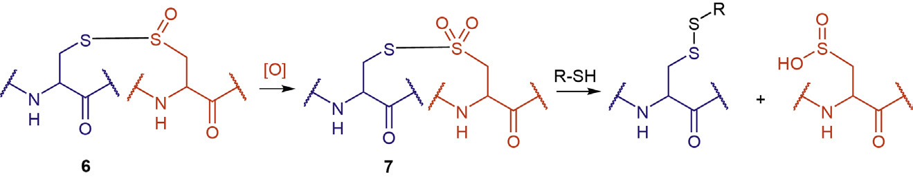
Figure 9.5 Cys次磺酸作为亲核试剂的各类反应
DMSO是引起Cys氧化的主要来源之一。DMSO可将巯基化合物转化为二硫键，该反应在pH 1-8范围内均可发生。在更剧烈的条件下（如高温），DMSO甚至可在HX（HCl/HBr/HI）催化下将巯基或二硫键氧化为磺酸。
已形成的二硫键可被进一步氧化为硫代亚磺酸酯（thiosulfinate, 6），再氧化为硫代磺酸酯（thiosulfonate, 7）。硫代亚磺酸酯水解可重新生成次磺酸，与巯基化合物反应可生成新的二硫键。
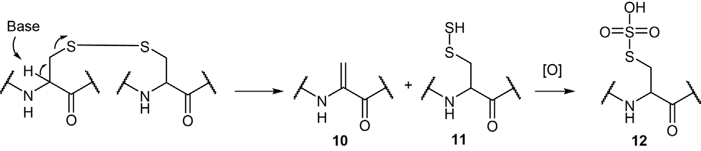
Figure 9.6 二硫键氧化为硫代亚磺酸酯及其水解/疏基解反应
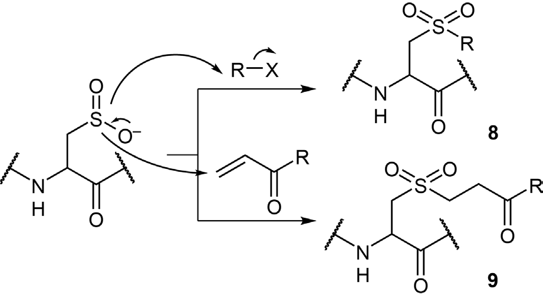
Figure 9.7 硫代磺酸酯的形成及疏基解反应
Cys亚磺酸（sulfinic acid）的化学稳定性优于次磺酸，pKa约为2。其去质子化形式可作为亲核试剂与卤代烃或α,β-不饱和化合物反应，分别形成砜类衍生物。
Cys磺酸（sulfonic acid）酸性强而亲核性可忽略，磺酸基是良好的离去基团，可发生β-消除生成脱氢丙氨酸（dehydroalanine）。
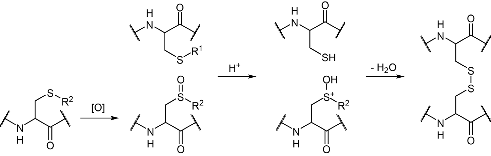
Figure 9.8 Cys亚磺酸介导的亲核反应
在碱性条件下，Cys二硫键可发生β-消除，生成脱氢丙氨酸（10）和硫代半胱氨酸（11），后者可进一步氧化为S-磺基半胱氨酸（12）。含二硫键的肽或蛋白在碱性条件或高温下尤其容易发生此副反应。
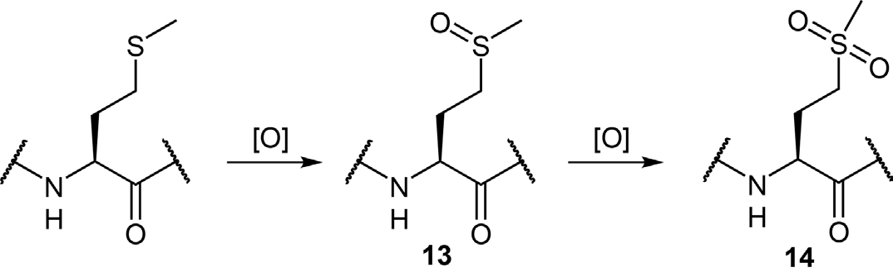
Figure 9.9 二硫键的β-消除及硫代半胱氨酸的氧化
Cys[Bzl(4-Me)]、Cys(Bzl)、Cys(Mob)、Cys(Acm)以及不对称二硫键均可被氧化为相应的亚砜衍生物。这些亚砜可与游离巯基甚至侧链保护的Cys（如Cys(tBu)、Cys(Mob)、Cys(1-Ada)）在酸性条件下反应生成二硫键。虽然这一反应已被设计用于区域选择性二硫键构建，但从副反应角度看，保护Cys被氧化为亚砜可能干扰目标二硫键的构建。
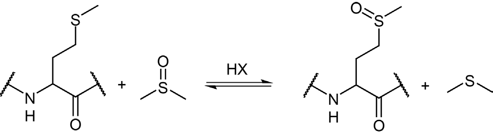
Figure 9.10 侧链保护Cys通过亚砜中间体形成二硫键
甲硫氨酸（Met）氧化是多肽合成中臭名昭著的副反应。其侧链硫醚（-S-CH₃）可被氧化为亚砜（Met(O), 13）甚至砜（Met-sulfone, 14）。Met(O)的形成尤其常见，对蛋白生理功能影响显著。
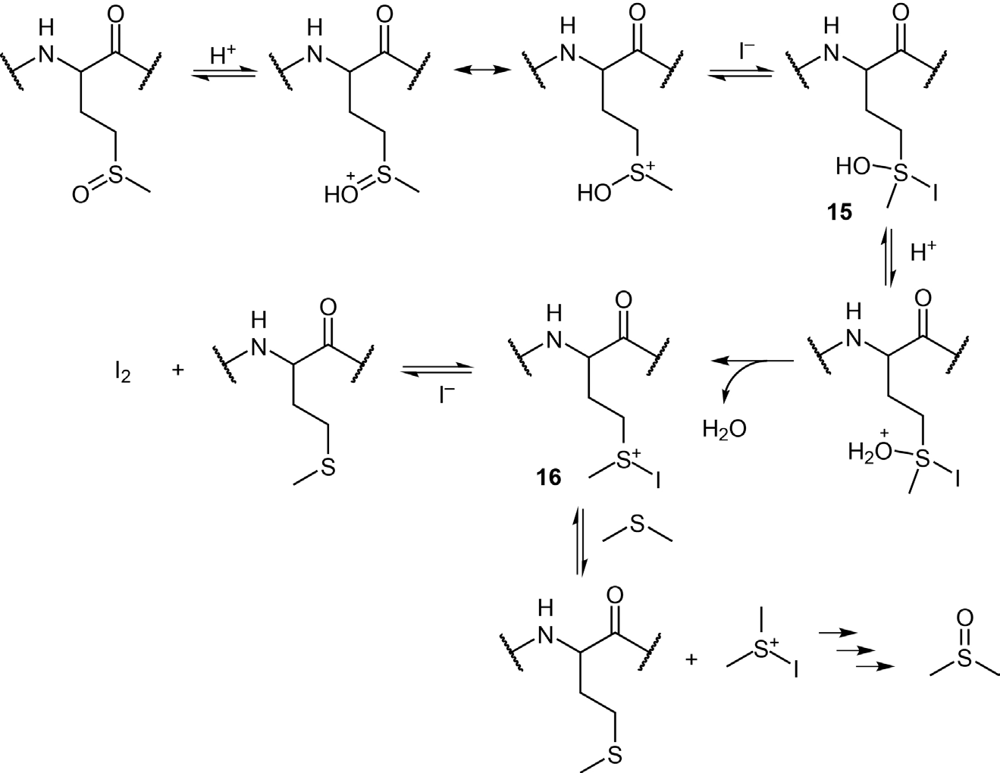
Figure 9.11 Met氧化为亚砜和砜
• 暴露于空气中的溶液可导致Met氧化
• H₂O₂、NBS、N-氯代琥珀酰亚胺等氧化剂
• DMSO在HX催化下可氧化Met（此为可逆过程，DMSO过量时趋向形成Met(O)）
• DMSO/HCl处理还可氧化Trp为羟吲哚丙氨酸、Cys为胱氨酸
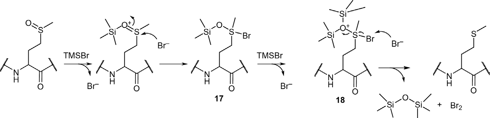
Figure 9.12 酸性条件下DMSO氧化Met为Met(O)
由于Met极易被氧化，有意使用Met(O)作为保护前体、在适当步骤还原再生Met已成为多肽合成的标准策略。
（1）NH₄I/Me₂S法（最常用）
在酸性条件下，NH₄I/Me₂S可将Met(O)还原为Met。机理：Met(O)的亚砜基首先被酸质子化，增强硫原子亲电性，I⁻亲核进攻形成中间体15→质子化脱水形成碘代锍离子中间体16→另一个I⁻亲核进攻释放I₂并再生Met。Me₂S可加速此过程，将碘代锍离子中间体还原为Met，自身被氧化为DMSO。
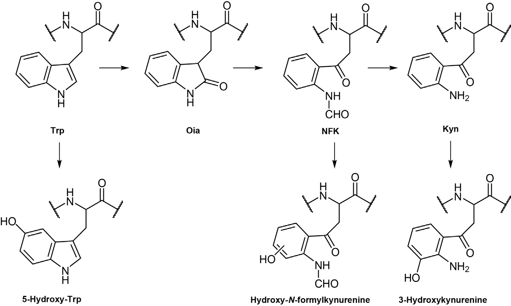
Figure 9.13 NH₄I/Me₂S介导的Met(O)还原
注意事项：
• 游离巯基应避免（防止二硫键-巯基交换）
• Cys(Acm)在此条件下稳定
• His和Tyr的官能团稳定
• Trp可能发生二聚（形成2,2'-indole-indoline或2,2'-indole-indole二聚体），应缩短反应时间
• 通常与TFA侧链全脱保护同步进行
（2）TMSBr法
TMSBr作为Lewis酸，对Met(O)亚砜基硅烷化并活化，Br⁻亲核进攻形成中间体17→进一步硅烷化形成中间体18→Br⁻进攻释放Br₂并再生Met。需加入硫代苯甲醚或EDT清除生成的Br₂。
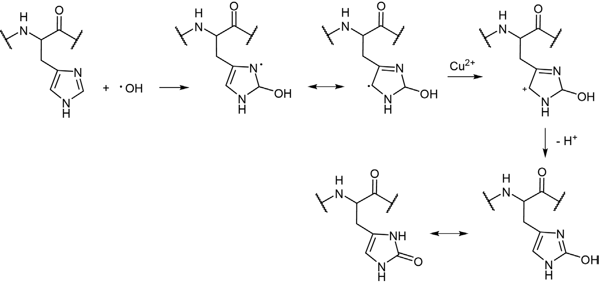
Figure 9.14 TMSBr介导的Met(O)还原机理
（3）Bu₄NBr法
Bu₄NBr在TFA中溶解度优于NH₄I，可在5分钟内定量还原Met(O)。建议在侧链全脱保护反应即将结束时加入，以缩短还原反应时间。
（4）预防Met氧化
• 巯基或硫醚类试剂（DTT、硫代乙酸、硫代乙醇等）可抑制侧链全脱保护过程中的Met氧化，但反应动力学较慢
• Boc化学中，Me₂S常加入HF中用于Met(O)再生
• 2-PySH可抑制酸性条件下Met的烷基化和氧化
Trp氧化是另一个常见的氧化副反应。氧化剂包括H₂O₂、O₂、O₃和DMSO/HCl。Trp在酸性条件下（特别是侧链全脱保护步骤）极易被氧化。
氧化产物包括：Kyn（犬尿氨酸）、NFK（N-甲酰犬尿氨酸）、羟-N-甲酰犬尿氨酸、3-羟基犬尿氨酸、5-羟基-Trp、7-羟基-Trp、Oia（羟吲哚丙氨酸）和DiOia（二氧羟吲哚丙氨酸）。
氧化主要发生在Trp吲哚侧链的吡咯环上。H₂O₂处理可将Trp转化为Oia，Oia可进一步氧化为NFK→脱甲酰化生成Kyn→进一步氧化为3-羟基犬尿氨酸。苯环部分也可被氧化为5-羟基-Trp。
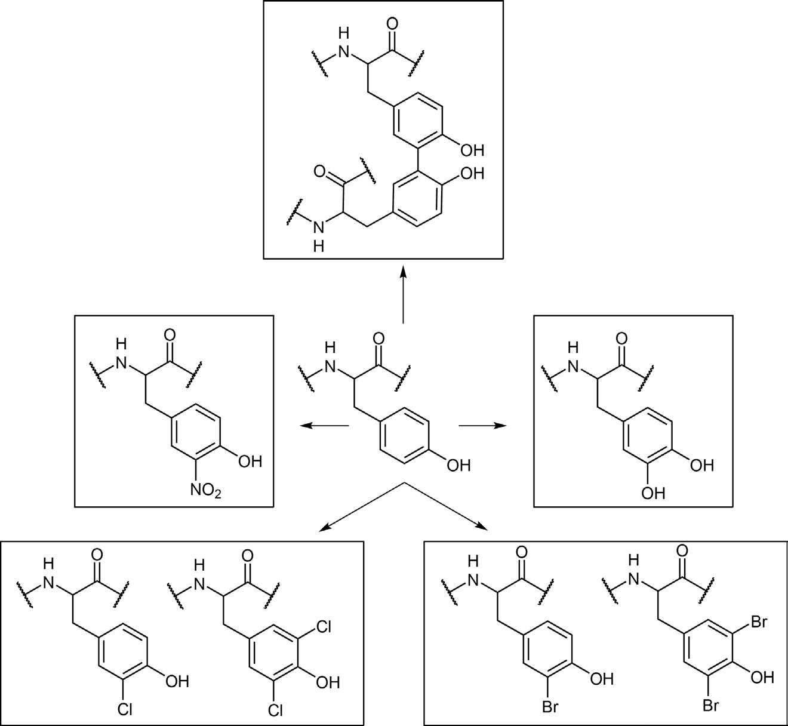
Figure 9.15 Trp氧化路径
预防措施：在侧链全脱保护反应中加入DTT或甲基吲哚等添加剂可减轻Trp氧化。
His可通过光催化氧化或金属催化氧化转化为2-oxo-His。该过程涉及Cu²⁺催化自由基氧化机理。
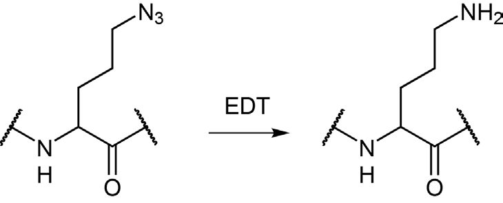
Figure 9.16 金属催化His氧化为2-oxo-His
Tyr的酚侧链可被多种氧化剂修饰，通过自由基或非自由基途径转化为：DOPA（3,4-二羟基苯丙氨酸）、3-硝基-Tyr、3-Cl-Tyr、3,5-二氯-Tyr、3-Br-Tyr、3,5-二溴-Tyr和二聚体Tyr。
Phe可被空气或自由基氧化为邻/间位-Tyr或DOPA。
• 多山梨酯（polysorbate）或PEG等赋形剂可能释放过氧化物，导致肽/蛋白氧化
• Tween-80中的过氧化物可引起强烈氧化
• 预填充注射器等包装材料可能释放过氧化物
• 醚类抗溶剂（如乙醚）中的过氧化物污染物可氧化敏感肽段
• 建议使用不易形成过氧化物的醚类，如MTBE（甲基叔丁基醚）或CPME（环戊基甲基醚）
还原副反应总体不如氧化副反应普遍，主要包括以下几类：
Trp的吲哚侧链可被还原剂（如用作侧链全脱保护清除剂的TES）还原为吲哚啉衍生物（详见Section 3.5）。
含叠氮基团的氨基酸（如Nva(N₃)、Nle(N₃)）在Click化学和Staudinger连接中有重要应用。但在侧链全脱保护过程中，叠氮基团可被某些还原性清除剂还原为氨基。
• EDT或DTT作为清除剂时，可将Nva(N₃)还原为Orn（鸟氨酸）
• EDT的还原能力远强于DTT
• Nle(N₃)在TFA/EDT中可被强烈还原为Lys
含二硫键的肽在巯基化合物或其他还原剂存在下可发生二硫键还原副反应（详见第13章）。
1. Cys氧化是最复杂的氧化副反应，涉及次磺酸→亚磺酸→磺酸的逐步氧化，以及二硫键的形成和进一步氧化。DMSO是Cys氧化的主要来源。
2. Met氧化生成Met(O)是多肽合成的常见问题。标准策略是使用Met(O)作为保护前体，通过NH₄I/Me₂S、TMSBr或Bu₄NBr等试剂在侧链全脱保护时同步还原。
3. Trp在酸性条件下极易被氧化，主要发生在吲哚吡咯环上，产物多样。
4. His、Tyr、Phe也可发生氧化副反应。
5. 赋形剂和包装材料中的过氧化物是不可忽视的氧化源。
6. 还原副反应主要影响叠氮基团（被EDT/DTT还原为氨基）和Trp（被TES还原）。